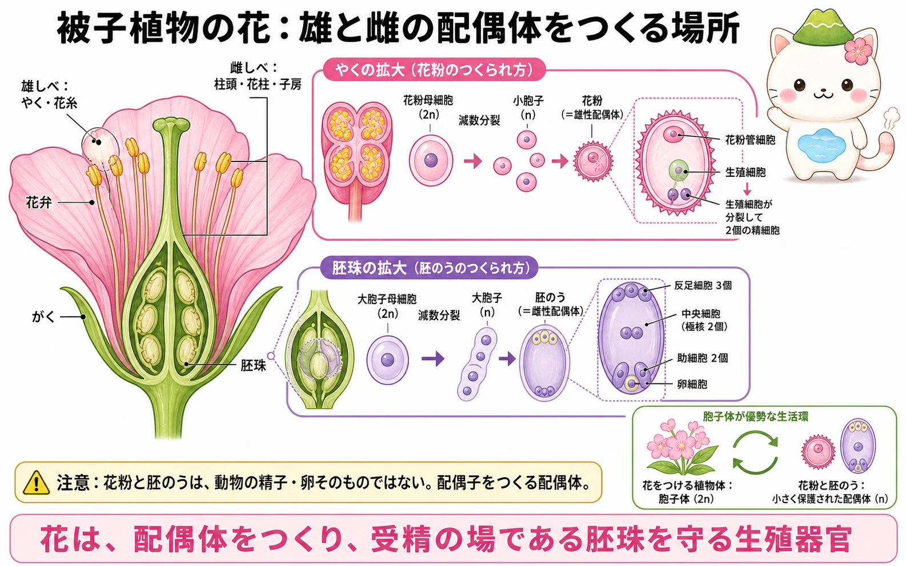
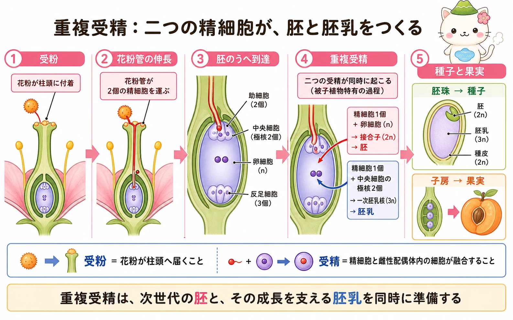

花の器官と生活環
被子植物の花は、がく、花弁、雄しべ、雌しべからなります。雄しべはやくと花糸、雌しべは柱頭、花柱、子房からなり、子房の中に胚珠があります。受精が起こる直接の場は子房全体ではなく、子房に包まれた胚珠の中です。
花をつける大きな植物体は、2倍体の胞子体です。その中で減数分裂が起こり、半数体の胞子がつくられます。胞子は自由生活する大きな配偶体にはならず、雄しべと雌しべの内部で小さく保護された配偶体へ発達します。この「配偶体を花の中に小さく保つ」ことが、種子植物の重要な特徴です。
花粉と胚のうは小さな配偶体
やくでは、花粉母細胞が減数分裂して小胞子をつくります。小胞子は分裂して、花粉管を伸ばす花粉管細胞と生殖細胞をもつ花粉になります。生殖細胞はのちに分裂し、2個の精細胞を生じます。花粉は精細胞そのものではなく、精細胞をつくり運ぶ雄性配偶体です。
胚珠では、大胞子母細胞が減数分裂し、そのうち1個の機能大胞子が生き残ります。機能大胞子は分裂を重ね、卵細胞、2個の助細胞、中央細胞内の2個の極核、3個の反足細胞をもつ胚のうになります。胚のうは雌性配偶体です。卵細胞は配偶子ですが、胚のう全体を卵と呼ぶのは正確ではありません。


花粉は「精子の袋」くらいに思われがちだけれど、実際は小さな雄性配偶体。胚のうも同じく、卵細胞をふくむ雌性配偶体なんだよ。
受粉から花粉管の伸長へ
受粉は、花粉がやくから柱頭へ移ることです。同じ花や同じ個体の花粉がつく自家受粉と、別個体の花粉がつく他家受粉があります。風や動物が花粉の移動を助け、花の色、形、香り、蜜などは送粉者との関係で進化してきました。
柱頭に着いた花粉が適合すると発芽し、花粉管が花柱を通って子房内の胚珠へ伸びます。花粉管は2個の精細胞を運び、胚珠の珠孔から入り、助細胞の近くで胚のうへ到達します。多くの被子植物には、自家受粉を避ける自家不和合性の仕組みもあり、柱頭や花柱で不適合な花粉の発芽・花粉管伸長を止めることがあります。
重複受精で胚と胚乳をつくる
花粉管から放出された2個の精細胞は、別々の融合に使われます。1個は卵細胞と融合して接合子（2n）になり、のちの胚になります。もう1個は中央細胞の2個の極核と融合し、通常は一次胚乳核（3n）になり、栄養組織である胚乳をつくります。この二つの受精が起こることを重複受精と呼び、被子植物の特徴です。
胚乳は、胚が発達する間や発芽の際の栄養を支えます。種子によっては成熟時に胚乳が大きく残り、別の種子では栄養の多くが子葉へ移されます。重複受精により、胚ができたときに栄養組織も本格的に発達するため、資源を効率よく使えると考えられます。

胚珠が種子、子房が果実へ
受精後、胚珠は種子へ発達します。接合子からできる胚、一次胚乳核からできる胚乳、胚珠の珠皮からできる種皮が種子の主要な部分です。子房は通常、種子を包む果実になります。果実の形成には、子房以外の花の部分も加わる場合があります。
種子と果実は、胚を乾燥や損傷から守り、休眠を通じて発芽の時期を選び、風・水・動物などによる分散を可能にします。花から種子への流れは、受精だけで終わらず、次世代が適切な場所と時期に成長を始めるまでを含む仕組みです。
受粉は「花粉が柱頭に届くこと」、受精は「精細胞が胚のうの細胞と融合すること」。二つを分けておくと、花粉管や重複受精の話がすっきりつながるよ。
この冊子の要点
- 花をつける植物体は胞子体で、花粉と胚のうは花の内部で保護される小さな雄性・雌性配偶体です。
- 花粉管は2個の精細胞を胚珠の胚のうへ運びます。受粉と受精は別の段階です。
- 重複受精では、精細胞と卵細胞から接合子・胚が、もう一方の精細胞と極核から一次胚乳核・胚乳ができます。
- 受精後、胚珠は種子へ、子房は通常果実へ発達し、胚の保護・栄養・分散を支えます。
参照資料
- OpenStax Biology 2e：Reproductive Development and Structure
- OpenStax Biology 2e：Pollination and Fertilization
- Taiz et al., Plant Physiology and Development, Oxford University Press.